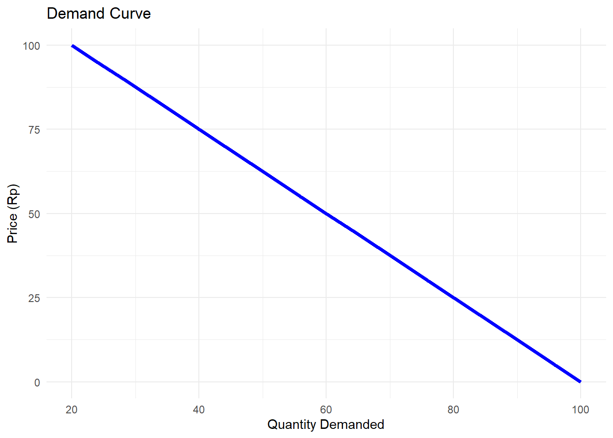

Di bagian ini, kita cari tahu konsep dasar yang mengatur semua harga di dunia: Permintaan (Demand) dan Penawaran (Supply). Selanjutnya, kita bakal coba visualisasikan dinamika ini pakai R.
Hukum Permintaan
Sekarang, pikirkan kopi susu favoritmu. Sampai akhir minggu lalu harga kopi susu itu masih 15 ribu, dan kamu beli stiap hari. Tapi, tiba-tiba mulai awal minggu ini harganya naik jadi 30 ribu. Kira-kira kamu masih beli sesering dulu enggak?
Kemungkinan besar enggak, kan? Mungkin kamu cuman akan beli awal bulan, atau cari alternatif yang lebih murah.
Inilah Hukum Permintaan: Kalau semua faktor lain tidak berubah, saat harga suatu barang naik, maka jumlah barang yang diminta akan turun. Sebalikanya, kalau harga turun, permintaan naik. Intinya: Hubungan antara harga dan permintaan itu terbalik. Inilah dasar mengapa harga di pasar bergerak.
Formula:
\[Qd = a - b*P\]
Bikin Kurva Permintaan di R
# Tentukan Fungsi Permintaannyaprice <-seq(0, 100, by =5)quantity_demanded <-100-0.8* price# Lanjut kita buat data framedemand_data <-data.frame(Price = price,Quantity = quantity_demanded)# Baru Lanjut Plot Kurvanyalibrary(ggplot2)ggplot(demand_data, aes(x = Quantity, y = Price)) +geom_line(color ="blue", size =1.5) +labs(title ="Demand Curve",x ="Quantity Demanded",y ="Price (Rp)") +theme_minimal()

Hukum Penawaran
Sekarang posisi kita adalah penjual atau produsen. Kamu adalah pemilik kedai kopi. Jika harga kopi susu lagi malah banget (30 ribu) kamu pasti semangat bangget buat bikin stok yang banyak, kalau perlu nambah jam operasional. Kenapa? Karena ada potensi Untung Gede.
Inilah Hukum Penawaran. Kalau semua faktor lain tidak berubah, saat harga suatu barang naik, jumlah barang yang ditawarkan juga akan bertambah. Intinya: Produsen itu semakin semangat menawarkan banyak barang ketika harganya sedang tinggi.
Formula:
\[Qs = c + d*P\]
Gabungkan Kurva Permintaan dan Penawaran
# Tentukan Fungsi Permintaan & Penawaranprice <-seq(0, 100, by =2)quantity_demanded <-100-0.8* pricequantity_supplied <--20+1.2* price# Buat kombinasi data framenyamarket_data <-data.frame(Price = price,Demand = quantity_demanded,Supply = quantity_supplied)# Cari Titik Keseimbanganequilibrium_price <- (100+20) / (0.8+1.2)equilibrium_quantity <-100-0.8* equilibrium_priceprint(paste("Equilibrium Price:", round(equilibrium_price, 2)))
# Plot kurva permintaanggplot(market_data) +geom_line(aes(x = Demand, y = Price, color ="Permintaan")) +geom_line(aes(x = Supply, y = Price, color ="Penawaran")) +labs(title ="Kurva Permintaan dan Penawaran",x ="Jumlah",y ="Harga" ) +theme_minimal() +theme(legend.position =c(0.9, 0.5) )
Permintaan dan penawaran membantu kita memahami bagaimana keputusan individu bertemu di pasar. Melalui kurva tersebut, kita bisa melihat bagaimana harga keseimbangan terbentuk, mengapa pasar cenderung menunju titik tertentu, dan bagaimana perubahan kondisi mempengaruhi hasil akhir. Konsep ini bisa menjadi fondasi untuk analisis kebijakan ekonomi.
##Membuat Fungsi Permintaan
Penasaran kan bagaimana fungsi permintaan seperti \[Qd = 1000 - 140*P\] bisa tiba-tiba muncul? Sini aku jelasin.
Misal, seorang pelaku UMKM mencatat 30 kali transaksi penjualan tas sekolah. Penjualan ke-1 sampai ke-15, harga relatif stabil. Mulai penjualan ke-16, harga mulai dinaikkan (misal karena biaya bahan naik), maka:
set.seed (123)n <-30obs <-1:n# Perhatikan, harga stabil lalu naik di observasi ke-16P <-c(rep(80,15), #harga awalseq(85, 120, length.out =15) #harga naik bertahap)# Permintaan menurun + noise (perilaku konsumen tidak sempurna)Q <-18000-100*P +rnorm(n, mean =0, sd=300)# Buat dataframe data penjualan (datpj)datpj <-data.frame(obs = obs,P=P,Q=round(Q) )datpj
Melalui visualisasi kita bisa lihat secara jelas ya bagaimana pola datanya. Lanjut, bagian terpenting untuk menjawab pertanyaan awal bagaimana fungsi permintaannya?
model_permint <-lm(Q ~ P, data = datpj)summary(model_permint)
Call:
lm(formula = Q ~ P, data = datpj)
Residuals:
Min 1Q Median 3Q Max
-581.31 -203.14 -13.31 160.33 522.65
Coefficients:
Estimate Std. Error t value Pr(>|t|)
(Intercept) 18388.020 362.997 50.66 <2e-16 ***
P -104.408 3.935 -26.54 <2e-16 ***
---
Signif. codes: 0 '***' 0.001 '**' 0.01 '*' 0.05 '.' 0.1 ' ' 1
Residual standard error: 293 on 28 degrees of freedom
Multiple R-squared: 0.9618, Adjusted R-squared: 0.9604
F-statistic: 704.2 on 1 and 28 DF, p-value: < 2.2e-16
Berdasarkan formula diatas, kita dapati hasil sebagai berikut:
Perhatikan nilai intercept dan P
Q = 18388 - 104*P Q = 18388 - 104P
Ini adalah fungsi permintaan linear. Apakah kalian bisa mengartikan nilai koefisien dari fungsi tersebut?